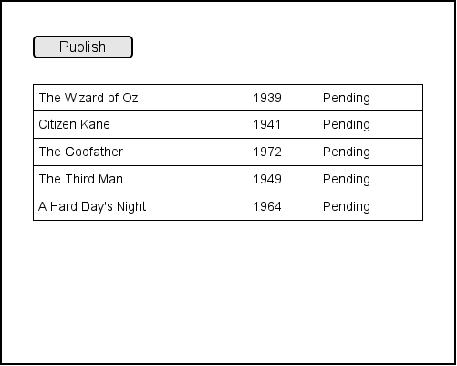
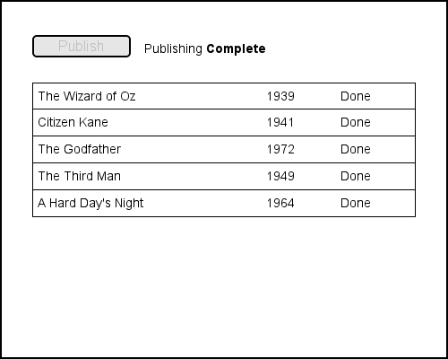

In this assignment you will display a list of movies that need to be published. We assume the publishing step is a time consuming process and they must be published one at a time (i.e. synchronous processing).
The assignment should accept an array of movies as it's input.
{% highlight javascript %} var movies = [ { name: "The Wizard of Oz", year: "1939" }, { name: "Citizen Kane", year: "1941" }, { name: "The Godfather", year: "1972" }, { name: "The Third Man", year: "1949" }, { name: "A Hard Day's Night", year: "1964" } ]; {% endhighlight %}The movies should be listed on the screen with a Pending status.

When the Publish button is clicked the publishing process starts:
When all movies have been published the progress message indicates the publishing is complete.

Use a JavaScript timer to simulate a delay while publishing each movie.
The application should work on both small and large displays and should adjust it's width according to the size of it's container.
Feel free to enhance your application with nicer styles or improved functionality.